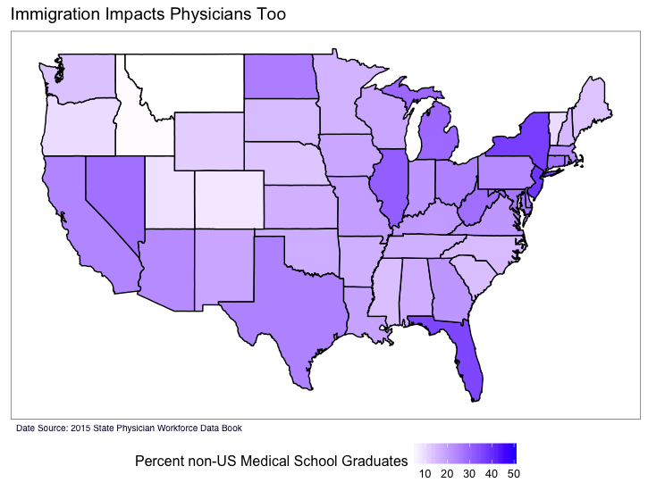

My first day on my Surgery rotation was a whirlwind, filled with excitement at to be part of a surgery and have an idea about what is going on and the fear of getting pimped and not knowing the answer; but, honestly, my biggest fear was somehow managing to contaminate the field. Somehow I misread the numbers on the OR and went into the wrong room as a case was starting. It was a flouro-guided vascular case and no one really batted an eye until the circulating nurse said, in what to my ears sounded very disdainful, “Who are you?” After I introduced myself as the medical student, she said, again in a tone that I can only describe as disdain for my existence, “It’s a good idea to introduce yourself when no one knows you.” Once the room stopped spinning and I realized that my career in medicine wouldn’t be over because I didn’t introduce myself correctly on the first day of surgery, I immediately thought about all the horror stories I’d read about medical student interactions with nursing staff and, as right as the circulating nurse was, boxed her off as the “mean nurse.” A few days later, I was wheeling a patient into an OR when she wouldn’t let me in because I forgot on my white coat. Even though she was again correct not to let me in without my badge, to me, this solidified it. She was just another nurse abusing her authority over a medical student.
My rotation got better as I went along, I never contaminated the field, and I got to do more as I was able to reach back into M1 and remember that anatomy was a course I had indeed once taken. I also managed to avoid this particular circulating nurse. Towards the end of my month on this service, President Trump signed an executive order (temporarily) banning immigration from seven Muslim-majority countries from entering the U.S. for 120 days and from Syria indefinitely. The circulating nurse, whose name is Paris, is Iranian-born, in the U.S. as a green card holder. Her mother obtained a visa to visit her, but this was now out of the question. As I stood over the patient in the surgical theater, I forgot my one-sided, personal quarrel with her and my righteous indignations turned to nothing but sympathy for a woman who is by all accounts a diligent nurse who is living with a dark cloud of not knowing when she will be able to see her family simply because she was born in the wrong country.
In the context of a Trump campaign filled with hostility towards immigrants and refugees, physicians, residents, and medical students have a role to play. Not only are the people being barred entrance to the US our patients, they are also our colleagues. While specifying only seven countries, the implications of last week’s order reached past the Middle Eastern and North African countries it targeted, In a quote to Forbes, Atul Grover, a physician and executive vice president of the AAMC worried about the implications to Indian and Pakistani physicians.“ The majority of our foreign doctors come from India and Pakistan, and while they’re not on the list I think when the environment feels this uncertain and this inhospitable, they’ll go to Canada and the U.K.,” he said.

For International Medical Graduates (IMGs), the lack of direction with which the White House and the Department of Homeland Security prosecuted the executive order makes an already uncertain application process that much more arduous. Hospitals that would normally recruit IMGs for residency now need to be more selective about their residents' passport. Otherwise qualified candidates from Syria, Iran, and the other five countries on the ban list will be barred from entering the U.S., but residency directors will also need to think about what countries may end up on this list and whether it is wise to rank a candidate who may not be able to enter the country part-way through residency. IMGs have already seen their numbers decline as the increase in US medical school slots has outpaced the increase in new residency positions(Incidental Economist).
This squeeze on the number of residency slots has pushed IMGs toward more rural areas (Kaiser), which are harder to fill with US graduates who have more options. There is nothing inherently wrong with this. Maybe US-trained doctors should take priority - that’s not the point of this post - but IMGs help bridge language and cultural gaps that US born and trained physicians cannot; they are less likely to serve this purpose in Wyoming, the Dakotas, or other areas with few low immigration density.
After we finished the case, I walked back to the physicians lounge and was met with the familiar sounds of Fox News' “breaking news” music accosting my ears from the TV. As the physicians in the room nodded in agreement at the TV and strained to sound reasonable, paying homage to some abstract threat with a “Well we gotta know who’s coming into the country,” seeking and finding nods of approval, not one of them had stopped to think that someone they work with every day is concretely hurt by the same order they are so eager to accept.
Update
This past Friday, a Federal Judge in Washington issued a temporary nationwide block of the ban.